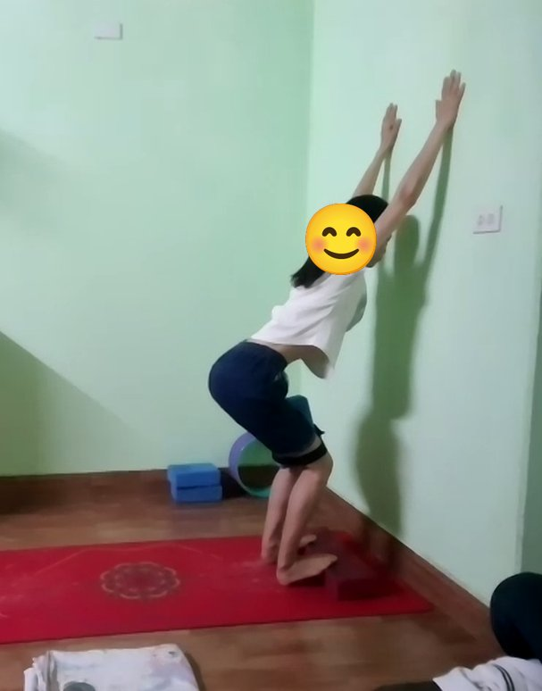
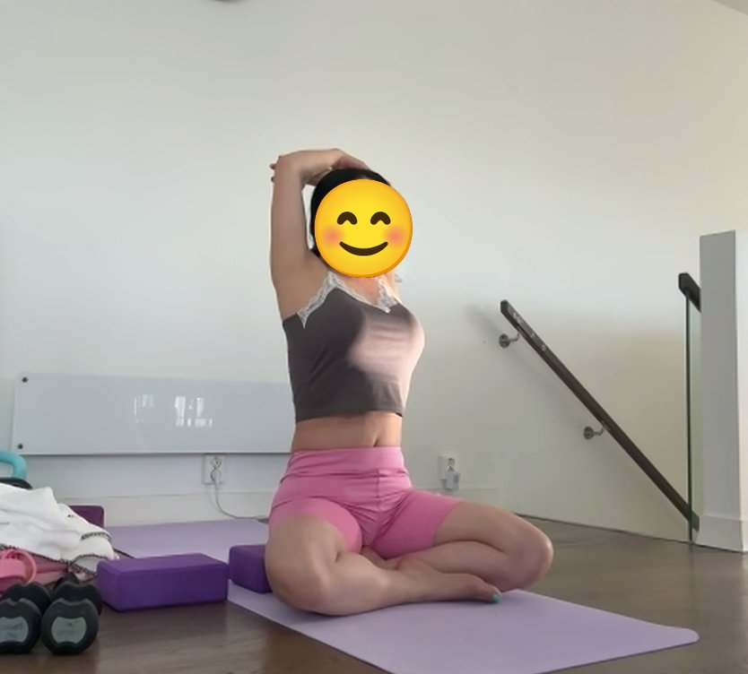
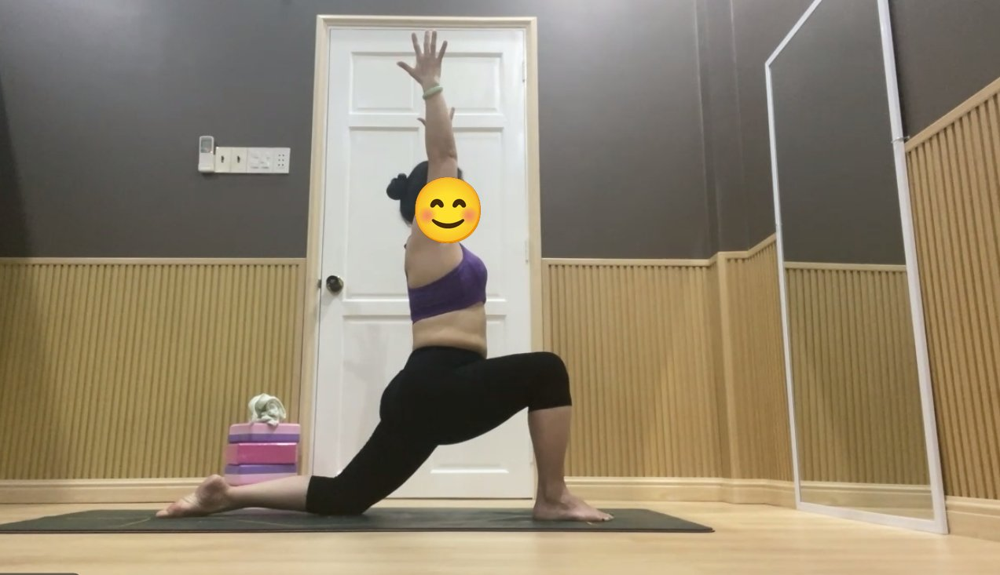

Yoga người lớn · Yoga cân bằng phục hồi
Yoga cân bằng phục hồi cho vai, cổ, gáy: đặt bớt gánh nặng xuống
Sáng ngủ dậy cổ cứng như gỗ. Chiều về hai bả vai nặng như ai đặt lên một bao gạo. Xoa dầu, dán cao, bấm huyệt, đỡ được vài hôm rồi lại đâu vào đấy.
Có một chị học viên đến lớp vì cái gáy. Chị làm kế toán, ngồi máy tính tám chín tiếng, tối về còn kèm con học. Buổi đầu, cô nhờ chị đứng tự nhiên. Vai trái cao hơn vai phải. Cằm chìa ra trước. Hơi thở nằm hết ở ngực, mỗi lần hít vào là hai vai nhô lên theo.
Chị hỏi: “Cô cho em mấy động tác giãn cổ là được ạ.”
Cô cười, bảo chị nằm xuống, đặt một tay lên bụng và thở. Chỉ thở thôi. Năm phút sau chị mở mắt, nói nhỏ: “Hình như vai em vừa rơi xuống một chút.”
Buổi hôm đó, chị chưa tập một tư thế nào cả.
Câu chuyện được kể lại từ nhiều học viên có cùng vấn đề, đã đổi chi tiết để giữ riêng tư.
Đau mỏi vai cổ gáy là chuyện của rất nhiều người. Bài Yoga cho đau lưng, cổ vai gáy đã kể nhiều về tư thế. Bài này Sophia muốn đi theo một hướng khác một chút: hướng của yoga cân bằng phục hồi. Ở đây tư thế chỉ là một phần nhỏ. Phần lớn hơn nằm ở hơi thở, ở cách mình sống mỗi ngày, và ở những gì mình đang gánh trên vai mà không phải là cặp sách hay túi xách.

- Ba gốc
- Vì sao vai gáy mỏi
- Năm thể
- Hơi thở trước
- Sáu tư thế
- Chuỗi 12 phút
- Đổi lối sống
- Tám bậc yoga
- Khi nào đi khám
Ba gốc của yoga cân bằng phục hồi
- 🌬️Hơi thở là gốc. Khi thở bằng ngực, các cơ quanh cổ phải làm thêm việc nâng lồng ngực lên cả vạn lần mỗi ngày. Trả hơi thở về bụng là trả cho cổ một phần sức.
- 🌿Cột sống là trọng tâm. Cổ chỉ là phần trên cùng của cột sống. Lưng giữa cứng, hông cứng, thì cổ phải bù. Nên cô chăm cả cây cột, không chỉ cái ngọn.
- ⚖️Cân bằng là hướng đi. Không ép giãn cho thật sâu. Chỉ tìm lại thế cân giữa trước và sau, trái và phải, làm và nghỉ.
Cơ thể con người có sẵn khả năng tự phục hồi. Vết xước tự lành. Cơ mỏi được nghỉ thì tự hồi. Việc của yoga không phải là “sửa” cái cổ, mà là gỡ bớt những thứ đang cản trở khả năng ấy: hơi thở gấp, tư thế lệch, giấc ngủ thiếu, cái đầu không lúc nào được nghỉ.
Vì sao vai gáy cứ mỏi mãi
Cái đầu người lớn nặng khoảng bốn, năm ký. Khi đầu thẳng trên vai, cột sống đỡ nó nhẹ nhàng. Khi cúi xuống nhìn điện thoại, sức kéo lên cổ tăng lên rất nhanh. Bác sĩ phẫu thuật cột sống Kenneth Hansraj đã ước tính bằng mô hình: cúi 15 độ, cổ chịu khoảng 12 ký; cúi 60 độ, con số lên tới khoảng 27 ký (Hansraj, 2014). Đó là mô hình tính toán, không phải đo trên người thật, nhưng nó giúp mình hình dung.
Cổ của mình đang gánh bao nhiêu?
Kéo thanh trượt để đổi góc cúi: 0, 15, 30, 45, 60 độ. Số liệu theo mô hình của Hansraj (2014).
Nhưng điện thoại chỉ là một phần. Ở lớp, cô hay gặp mấy nguyên nhân cứ đi cùng nhau:
🌬️
Thở bằng ngực
Cơ thang trên và cơ bậc thang ở cổ là cơ hô hấp phụ. Thở ngực cả ngày là bắt chúng làm thêm ca.
🪑
Ngồi một chỗ
Màn hình thấp, ghế cao, ngồi vài tiếng không đứng dậy. Cơ không được đổi tư thế thì mỏi.
😣
Căng thẳng
Khi lo, vai tự nhô lên như đang co lại để tự vệ. Lo kéo dài thì vai nhô kéo dài.
🛏️
Ngủ chưa đủ
Thiếu ngủ làm mình nhạy đau hơn. Gối quá cao hay quá thấp làm cổ lệch suốt đêm.
🌧️
Lạnh và gió
Ngồi ngay quạt, điều hòa thổi vào gáy, tắm đêm. Cơ co lại vì lạnh.
🎒
Gánh trong lòng
Lo cho con, lo việc, lo tiền. Người Việt mình hay nói “gánh trên vai”. Có khi đúng theo nghĩa đen.
Vai gáy trên cả năm thể
Yoga nhìn con người qua năm lớp, gọi là năm thể (bài Năm thể của con người kể kỹ hơn). Một cái gáy mỏi thường có dấu vết ở cả năm lớp.
Thân
Cơ cổ vai căng cứng, lưng giữa gù, ngực khép, đầu chìa ra trước.
Khí
Hơi thở nông, nằm ở ngực. Hay nín thở khi tập trung làm việc.
Tâm
Bực bội, dồn nén, dễ cáu. Không cho phép mình than mệt.
Trí
Đầu lúc nào cũng chạy việc. “Phải xong cái này đã rồi mới nghỉ.”
Tinh thần
Thấy mình phải gánh hết. Quên mất mình cũng cần được đỡ.
Vì vậy, cô không bắt đầu bằng việc xoay cổ. Cô bắt đầu bằng việc để học viên được thở, được nằm, được nghe cơ thể nói.
Hơi thở trước, tư thế sau
Đặt một tay lên ngực, một tay lên bụng. Hít vào bằng mũi. Tay nào nhô lên trước? Nếu là tay trên ngực, và vai cũng nhích lên theo, thì cổ mình đang phải giúp thở. Thử nằm ngửa, co gối, để bụng phồng nhẹ khi hít vào, xẹp xuống khi thở ra. Thở ra dài hơn hít vào một chút. Đó là cách nhanh nhất cô biết để nhắn với hệ thần kinh rằng: không có gì nguy hiểm cả, có thể thả lỏng.
Thở chậm làm dịu cơ thể. Một tổng quan về thở chậm khoảng sáu nhịp mỗi phút cho thấy cách thở này gắn với hoạt động phó giao cảm tăng lên và cảm giác thư thái hơn (Zaccaro và cộng sự, Frontiers in Human Neuroscience 2018).
Ba phút. Nằm hay ngồi đều được. Mỗi lần thở ra, hình dung hai bả vai trượt xuống xa tai thêm một chút.
Sáu tư thế đơn giản, đúng chỗ
Không cần tư thế khó. Cô chọn sáu tư thế mà ai cũng làm được, kể cả người lớn tuổi, kể cả ngồi trên ghế văn phòng. Tất cả đều đi chậm theo hơi thở. Không ép, không đếm số lần cho thật nhiều.
Thu cằm
Kéo đầu về trên vai 1 phút
Ngồi thẳng. Nhẹ nhàng đưa cằm lùi về sau như đang tạo một cái cằm đôi, mắt vẫn nhìn thẳng. Giữ ba hơi thở rồi thả. Làm năm lần. Đây là cách đưa đầu trở về đúng chỗ của nó trên cột sống.
Lăn vai
Vòng vai chậm 1 phút
Hít vào, nâng hai vai lên tai. Thở ra, kéo vai ra sau rồi thả xuống. Như đang đặt một gánh nặng xuống đất. Chậm thôi, năm đến tám vòng.
Vịn tường mở ngực
Mở vai cạnh tường 2 phút
Đứng cách tường một bước, hai tay đặt cao trên tường. Hạ ngực về phía tường, đầu nằm giữa hai cánh tay, không gục. Thở vào phần lưng giữa.
Mèo bò
Marjaryasana, Bitilasana 2 phút
Quỳ bốn điểm. Hít vào, ngực mở về trước. Thở ra, cong tròn lưng giữa. Cổ chỉ đi theo cột sống, không ngửa đầu ra sau quá mức.
Nằm dọc gạch
Mở lồng ngực được đỡ 3 phút
Đặt một viên gạch hoặc khăn cuộn dọc theo cột sống, từ giữa lưng lên. Đầu kê thêm gối. Hai tay mở sang bên. Ngực mở mà cổ được đỡ hoàn toàn.
Thở tiếng ong
Bhramari 2 phút
Ngồi thoải mái, nhắm mắt. Thở ra với tiếng “mmm” nhẹ. Tiếng rung lan ra quanh đầu, quanh gáy. Nhiều học viên kể đây là lúc vai thả xuống rõ nhất.
Cô hay để ý mấy điều. Cô không cho xoay vòng cổ hết cỡ, nhất là ngửa đầu ra sau rồi xoay. Cô không kéo đầu bằng tay. Nếu tư thế nào làm tê tay hay đau nhói lan xuống cánh tay, dừng lại ngay. Đau mỏi nhẹ, dễ chịu kiểu “được giãn” thì không sao. Đau nhói, đau buốt thì không phải là đúng.


Chuỗi 12 phút cho buổi tối
Đây là chuỗi cô hay cho lớp tập vào cuối ngày. Bấm bắt đầu, nghe tiếng chuông nhỏ thì đổi bước. Bấm vào một bước bất kỳ để nhảy đến bước đó.
Vai nhẹ, cổ dài
- Nằm thở bụng Nằm ngửa co gối, một tay trên bụng. Hít vào bụng phồng, thở ra dài.
- Thu cằm khi nằm Đầu vẫn trên sàn, nhẹ nhàng ép gáy dài ra, cằm lùi về. Giữ ba hơi rồi thả.
- Mèo bò Quỳ bốn điểm, đi theo hơi thở. Cổ theo cột sống.
- Kim xâu chỉ Từ bốn điểm, luồn tay phải qua dưới ngực sang trái, vai và thái dương nằm xuống thảm. Thở.
- Kim xâu chỉ bên kia Đổi bên. Không đè sức nặng lên cổ.
- Lăn vai ngồi Ngồi xếp bằng, lăn vai chậm ra sau.
- Nghiêng tai về vai Tai phải hướng về vai phải, vai trái thả xuống. Nửa phút mỗi bên. Không kéo.
- Thở tiếng ong Năm đến bảy hơi “mmm”.
- Nằm dọc gạch Gạch hoặc khăn cuộn dưới lưng, gối dưới đầu. Tay mở. Nằm yên.
Đổi lối sống: phần lớn của việc phục hồi
Mười hai phút tập buổi tối chỉ là một phần nhỏ trong hai mươi bốn giờ. Mười tám tiếng thức còn lại mới quyết định cái gáy ngày mai ra sao.
- Sáng dậyChưa cầm điện thoại vội. Uống một cốc nước ấm, ra ban công hay sân, tắm nắng sớm mười lăm phút. Nắng sáng làm ấm vai gáy, giúp đồng hồ sinh học đúng giờ để tối ngủ sâu hơn.
- Chân đấtCó cỏ, có đất, có cát thì cởi giày đi vài phút. Bàn chân được chạm đất, cả cơ thể như được neo lại. Cô thấy học viên đi chân đất xong thường thở chậm hơn hẳn.
- Bàn làm việcMép trên màn hình ngang tầm mắt. Điện thoại nâng lên ngang mặt thay vì cúi xuống. Cứ ba mươi phút đứng dậy, lăn vai, thu cằm vài lần.
- Ăn uốngĂn đủ rau xanh, các loại hạt, đậu, uống đủ nước. Bớt đồ chiên rán, đồ ngọt, rượu bia. Ăn tối sớm và nhẹ để giấc ngủ không phải gánh thêm việc tiêu hóa.
- Giữ ấmKhông để quạt hay điều hòa thổi thẳng vào gáy. Mùa lạnh quàng khăn mỏng. Tắm nước ấm buổi tối, không tắm khuya.
- Nghỉ ngơiXen giữa ngày vài phút không làm gì. Nhắm mắt. Thở ba hơi dài. Nghỉ không phải là lười.
- Suy nghĩMỗi tối viết ra ba việc của ngày mai, rồi gấp sổ lại. Việc đã nằm trên giấy thì không cần nằm trên vai nữa. Và viết thêm một điều mình biết ơn trong ngày.
- Giấc ngủGối vừa phải để cổ thẳng hàng với cột sống khi nằm nghiêng. Không nằm sấp xoay cổ cả đêm. Đọc thêm bài mất ngủ lâu năm nếu đêm nào cũng trằn trọc.
- ThiềnNăm phút ngồi yên trước giờ ngủ. Chỉ quan sát hơi thở. Ai mới bắt đầu có thể dùng đồng hồ thở ở trên.
Tám bậc yoga cho một cái gáy mỏi
Yoga cổ điển có tám bậc. Tư thế chỉ là bậc thứ ba. Mỗi bậc đều có thể giúp cái gáy theo cách của nó.
Giới
Yama
Ahimsa, không làm đau mình: không ép cổ, không cố làm thêm khi người đã mỏi rã. Aparigraha, không ôm đồm: bớt nhận những việc không phải của mình.
Luật
Niyama
Tapas, đều đặn: mười phút mỗi ngày hơn một giờ mỗi tháng. Santosha, biết đủ: hôm nay đã làm đủ rồi, có thể nghỉ.
Tư thế
Asana
Vài tư thế đơn giản, đúng chỗ, an toàn. Thân vững và dễ chịu là đủ.
Hơi thở
Pranayama
Thở bụng, thở ra dài, thở tiếng ong. Gốc của mọi thứ.
Thu giác quan
Pratyahara
Tắt bớt màn hình, bớt tiếng ồn. Cho mắt và tai được nghỉ là cho cổ được nghỉ.
Tập trung
Dharana
Làm một việc một lúc. Đầu bớt chạy, vai bớt căng.
Thiền
Dhyana
Vài phút ngồi yên mỗi ngày, quan sát mà không phán xét.
Hòa nhập
Samadhi
Những khoảnh khắc thấy mình nhẹ tênh, bình an. Không cần cố. Nó tự đến khi mọi thứ đã cân bằng.
Satya, chân thật, có lẽ là giới cô muốn nhắc nhất với người đau vai gáy. Thật với chính mình rằng mình đang mệt. Thật với người nhà rằng mình cần được đỡ một tay. Nhiều chị học viên chỉ cần nói được câu “Anh trông con giúp em tối nay nhé” là thấy vai nhẹ đi một nửa.
Ai muốn đọc thêm có mục Giới và luật trong yoga.
Nghiên cứu nói gì
Yoga cho đau cổ mạn tính. Ở Đức, 77 người đau cổ lâu ngày được chia hai nhóm. Nhóm tập yoga chín tuần giảm đau rõ hơn nhóm tự tập theo tài liệu (Michalsen và cộng sự, The Journal of Pain 2012). Một nghiên cứu khác cũng ở Đức so sánh yoga với bài tập tại nhà, nhóm yoga giảm đau nhiều hơn và thấy dễ chịu trong cơ thể hơn (Cramer và cộng sự, Clinical Journal of Pain 2013).
Tổng hợp nhiều nghiên cứu. Một phân tích gộp mười nghiên cứu cho thấy yoga giúp giảm đau và giảm hạn chế vận động ở người đau cổ, ít nhất trong thời gian ngắn (Li và cộng sự, Medicine 2019). Các tác giả cũng nói số người tham gia còn ít, cần thêm nghiên cứu.
Cơ cổ khỏe hơn, cổ bớt đau. Ở Phần Lan, phụ nữ văn phòng đau cổ tập tăng sức cơ cổ đều đặn một năm giảm đau rõ rệt (Ylinen và cộng sự, JAMA 2003). Tức là vận động nhẹ, đều, lâu dài giúp nhiều hơn nằm im.
Khi nào cần đi khám
Yoga và thay đổi lối sống đi cùng, không thay cho việc khám và chăm sóc của bác sĩ. Nên đi khám sớm khi:
- Tê bì, yếu tay, cầm đồ hay rơi, đau lan xuống cánh tay hoặc ngón tay.
- Đi lại loạng choạng, vụng tay khi cài cúc áo, viết chữ. Có thể liên quan đến tủy cổ.
- Đau ngực, khó thở, vã mồ hôi kèm đau vai trái hoặc lan lên hàm. Đây có thể là bệnh tim. Gọi cấp cứu 115 ngay.
- Đau đầu dữ dội đột ngột, chóng mặt, nhìn đôi, nói khó, méo miệng.
- Đau sau tai nạn, sau té ngã, sau va đập.
- Kèm sốt, sụt cân không rõ lý do, đau nhiều về đêm khi nằm yên.
- Đau không đỡ sau bốn đến sáu tuần dù đã nghỉ ngơi và tập nhẹ.
Người đã được chẩn đoán thoát vị đĩa đệm cổ, thoái hóa cột sống cổ nặng hay hẹp ống sống nên hỏi bác sĩ trước khi tập. Bài Yoga cân bằng phục hồi cho người thoát vị đĩa đệm có thêm phần này.
Lời nhỏ cuối bài
Chị kế toán trong câu chuyện đầu bài giờ vẫn ngồi máy tính tám tiếng. Công việc không đổi. Nhưng màn hình đã được kê cao lên. Cứ mỗi lần điện thoại báo giờ uống nước, chị đứng dậy lăn vai. Tối nào cũng nằm dọc viên gạch mười phút trước khi ngủ. Chị bảo: “Em vẫn mỏi, cô ạ. Nhưng em biết cách đặt nó xuống rồi.”
Cô nghĩ đó là điều quan trọng nhất.
Thở ra. Vai thả xuống.
Cái gì không phải của mình, đặt bớt xuống thôi.
🌿 Muốn có người đi cùng trên hành trình phục hồi?
Sophia Yoga có lớp người lớn trực tiếp, lớp Zoom và lớp kèm 1 kèm 1 (500.000đ / giờ), theo hướng yoga cân bằng phục hồi: hơi thở là gốc, cột sống là trọng tâm, tập vừa sức. Ai muốn mang yoga đến với các con, có khóa đào tạo HLV Yoga trẻ em.
Tài liệu tham khảo
- Hansraj K.K. (2014). Assessment of stresses in the cervical spine caused by posture and position of the head. Surgical Technology International, 25, 277–279.
- Michalsen A. và cộng sự (2012). Yoga for chronic neck pain: a pilot randomized controlled clinical trial. The Journal of Pain, 13(11), 1122–1130.
- Cramer H. và cộng sự (2013). Randomized-controlled trial comparing yoga and home-based exercise for chronic neck pain. Clinical Journal of Pain, 29(3), 216–223.
- Li Y. và cộng sự (2019). Effects of yoga on patients with chronic nonspecific neck pain: a PRISMA systematic review and meta-analysis. Medicine, 98(8), e14649.
- Ylinen J. và cộng sự (2003). Active neck muscle training in the treatment of chronic neck pain in women: a randomized controlled trial. JAMA, 289(19), 2509–2516.
- Zaccaro A. và cộng sự (2018). How breath-control can change your life: a systematic review on psycho-physiological correlates of slow breathing. Frontiers in Human Neuroscience, 12, 353.
- Patañjali. Yoga Sutra, chương II (Yama, Niyama, II.29–45).
Ảnh trong bài là ảnh thật từ các buổi tập của Sophia Yoga, mặt học viên đã được che và tên trên Zoom đã được làm mờ. Câu chuyện là minh họa, ghép từ nhiều học viên. Bài viết chia sẻ kiến thức và kinh nghiệm tập luyện, không thay cho lời khuyên và chăm sóc của bác sĩ.